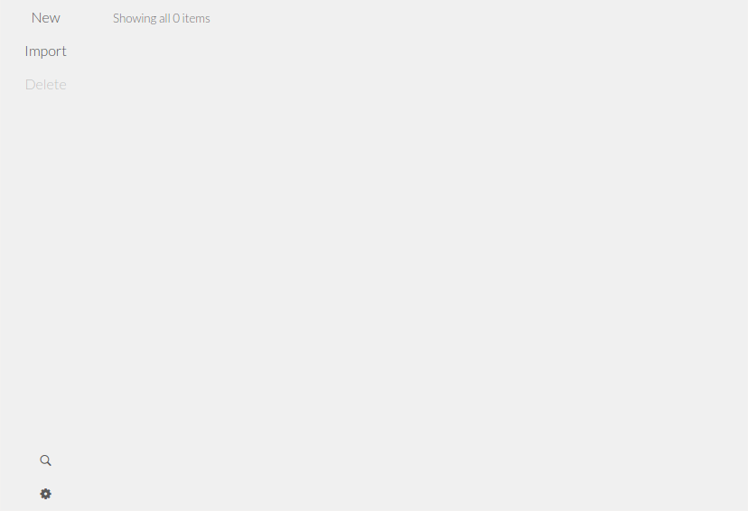
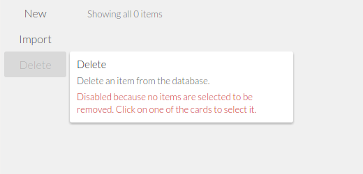
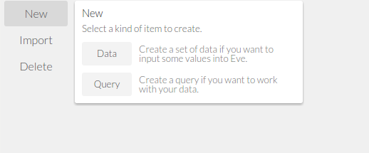
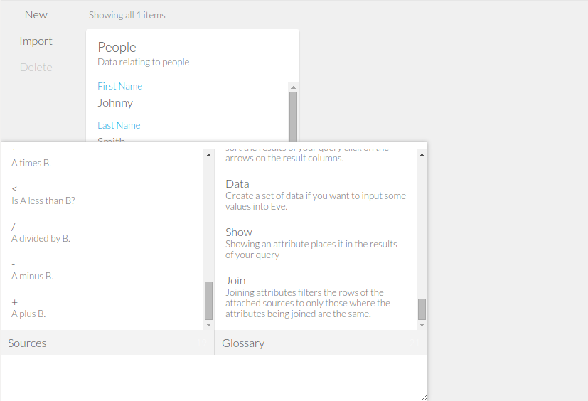
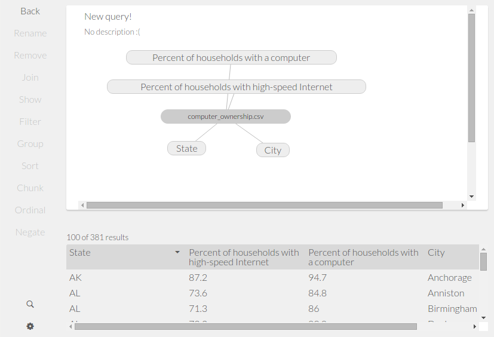
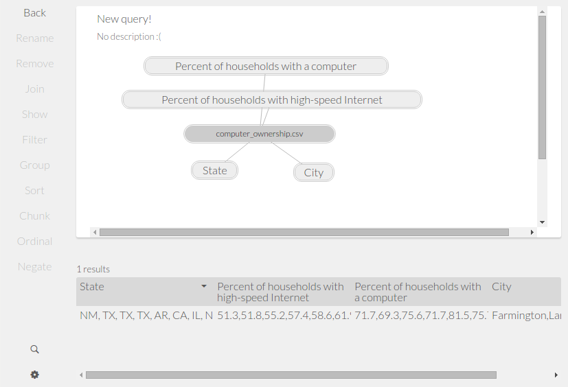
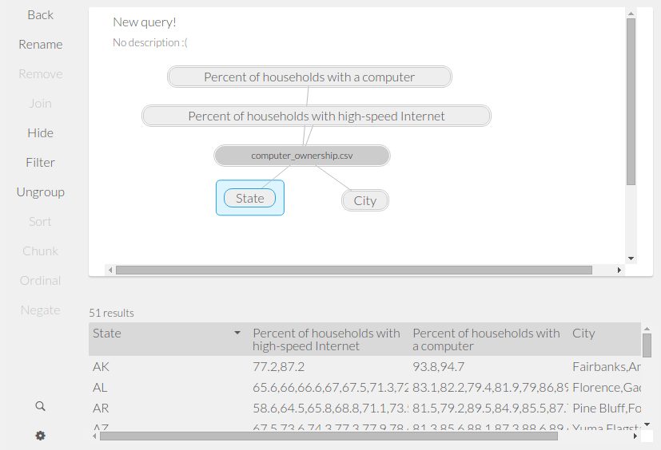
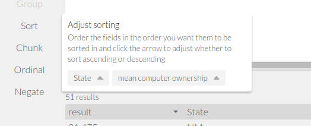
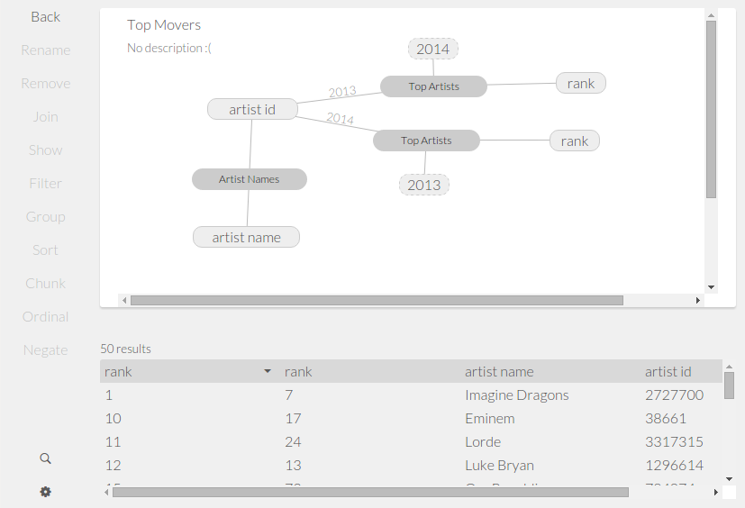

Intro to Eve Tutorial
Introduction
Hello and welcome to Eve! In this tutorial, we are going to walk you through the features of Eve by way of a guided example. By the time you are finished reading this document, you should be familiar with the concepts behind Eve and have the ability to perform basic data operations within the Eve interface. If you haven't already installed Eve, you should first follow the Quick Start instructions in the readme.
Interface
Eve lives in your web browser. We suggest using Google Chrome (we've been testing against Chrome while developing Eve, so it will work the best) but feel free to try other browsers. You'll probably find bugs, and when you do, you can report them to us so we can fix them (or if you're feeling adventurous, go ahead and contribute a fix). To start using Eve, navigate to your Eve installation directory within your console, and run the command './run.sh'. Your default browser will open up a new tab that looks something like this:
Let's point out the basic interface elements of Eve. On the left hand side is the command bar. This is where all your available commands live. At the bottom on the screen, a gear icon indicates the settings menu. This is where you can save and load Eve programs, as well as set preferences and access advanced options. Above that, the magnifying glass icon indicates the Search command (we'll point out here that throughout the rest of the tutorial, commands will be called-out with a small blue rectangle). We'll talk about what this command does later in the tutorial.
Depending on what you have selected, some options in the command bar will be enabled, indicated by dark text; while others will be disabled, indicated by gray text. For instance, right now New, and Import are enabled, while Delete is disabled. Search and Settings are always enabled. Why is Delete disabled? Well, just go ahead and hover your mouse to find out.
When you hover over Delete, a tooltip pops up telling you what the command does. If the command is disabled, the tooltip also tells you why that is the case and what you need to do to enable it. In this case, the tooltip is telling you to select a card. What is a card? We'll get to that in the next section. In general, hovering over almost any item in Eve will reveal a tooltip to help you out. Try hovering over Search and New to learn what they do.
Your First Data Card
Things look pretty sparse right now, so let's go ahead and create your first card. In Eve, cards are a way of grouping things, whether they be data or a query or (in a future release) a user interface. Right now, we're going to create a data card. Data cards are where external data live in Eve. You can pull in data from an external source into a data card, or enter data manually. Let's see how this is done. Click on the New command and you will see the following options for new cards to create:
We will get queries later, but for now just click on Data. As the tooltip suggests, this will create a new data card that you can use to input data into Eve. Data cards have a name, a description, one or more fields, and a data table with one column for each field. The interface is broken into two sections: the top half of the page is a form you use to enter data into the card's data table, while the bottom half of the page displays the rows in the data table. Our goal now is to make a table containing the details of a person, sort of the "Hello World" of database systems.
If you take a look at the command bar, you can see some new commands are now available. Hover over each of them to see what they do. The general process for creating a card is to give it a name and description, then add one field for each type of data in your data table. Our person card will contain the following fields: First Name, Last Name, Birthday, Phone, and E-Mail. Follow along with the video to see how this data card is configured.
You can add as many rows to your data table as you like by simply filling out the form and clicking the submit button. If you want to modify a row, click it and the form will be filled in with the row's data, which you can then modify. Selecting a row and clicking on the -Entry command will remove that row from your table.
Now that you've created your first card, click Back to go to the Eve home screen. Now you'll see a preview of the card you just created displayed on the canvas. Remember that disabled Delete command? Single click on your new People card to select it, and you will see Delete is now active, which allows you to remove the card you just created. To add new rows to your card's data table, or to modify the fields, double click on the card, and you will be brought back to the card edit view
Search
A key feature of Eve is universal search, which allows you to search the entire Eve system for keywords. Search can be accessed by clicking on the Search command, or by the keyboard shortcut ctrl+F (or cmd+F for OSX). The search panel consists of three sections. On the left is a list of built-in functions as well as any cards you've added. On the right is a glossary of terms used in Eve. On the bottom is the search input area, where you can enter search keywords. For instance, if you search for "People", the results are filtered down as you type. Clicking on a search result will bring you to the card editing view for the People card.
Your First Query Card
Now we'll go back and visit how to create and use query cards. But before that, we need some data to play with in the Eve system. Right now, Eve can import external data from CSV files. Let's see how to do this.
Importing Data
The real power of Eve comes in answering questions about data. Let's say you have some data about computer ownership and internet usage by city in the United States, and you want to find out what the average is by state. As it turns out, we have just this data, located in the 'example-data' folder in your Eve installation directory. We can import this data into Eve. On the Eve home screen, click on Import. Then, click Choose File and browse to the 'example-data' folder in your Eve installation directory. Choose the file 'computer_ownership.csv', and make sure the 'Treat first row as header' check box is selected. Finally, click Import.
You have just imported a CSV (comma separated value) file into Eve. You'll see that once it is imported, a new data card is created with the name of the CSV file, as well as a form for entering new data according to the fields detected in the CSV file. In this file, we have fields relating to 'City', 'State', 'Percent of households with a computer' and 'Percent of households with high speed internet'.
The Query Builder
Now let's take a look at the query builder interface. As the name suggests, the query builder allows us to answer questions about our data. The general idea is to pull in all relevant data we need to answer the question, and then use the tools within Eve to find the answer. Let's start by creating a new query and pulling in the computer usage statistics we just imported.
From the Eve home screen, click New and then Query. Before we explain the new page, let's bring in a source. Click on Search and find the data card of your newly imported CSV (which if you didn't change the name should be called 'computer_ownership.csv'). Click on the search result, and a graph will be added to the page. You should see something like this:
You've just pulled in data from the computer_ownership data card. First let's talk about the interface and introduce some terminology. On the left is the familiar command bar, but with some new commands that relate directly to the query builder. On the right, you can think of this as the "question" on the top, and the "answer" on the bottom. The "question" is formed not in words, but by a graph. The "answer" on the bottom is the output of that graph. Currently, we are asking the question "What data exists in computer_ownership?. Therefore, the answer is exactly that data. In the question, the central box of the graph is called a "source", and each of its spokes is called an "attribute". The key to using Eve is learning how to translate a question into the appropriate graph structure to display the desired answer.
Let's start by asking a simple question, and we'll show you how to find the answer.
What is the average computer ownership by state?
We have data about average computer ownership by city. But what about at the state level? We have 381 cities, each with a corresponding state. All we need to do is group all the cities with the same state together, then take their corresponding percentages of computer ownership, and average them together. Easy, right? To answer this question, we need to use the concepts of Chunk, Group, and Aggregate.
Chunk
The Chunk command takes every row from a source and compacts them into a single row. This allows you to do comparisons and calculations using all of your data instead of just a single piece. For instance, the result of this query has 381 results. If you click on the computer_ownership source and then click Chunk, you'll see only a single row in the results. Also you should notice the attributes of computer_ownership now have a double outline, indicating they are chunked. If you take a look at the single row, you'll see all the averages, cities, and states are still there, just combined into one long entry.
Group
We said before we wanted to group by state. The Group command does exactly this for the attribute of your choice. Select the State attribute, and then click on Group. In the answer, you'll see we now have 51 results, corresponding to the 50 United States plus the District of Columbia. The other columns contain all the cities in those states, as well as their corresponding computer usage statistics.
Aggregates
We're close to finding our answer. All we need now is to average the percentages using something called an aggregate. Aggregates are a way of reducing a set of values to a single value. Common examples of aggregates include Mean and Count. Mean is exactly the aggregate we need in this case. To use Mean, open the search console, and search for "mean". Click on the result and you'll see a new source has been added to the question area.
This new source is an aggregate, and it has two attributes: "A", which is the input to the aggregate; and "result", which is the output of the aggregate. You'll also notice in the answer section, "result" has been added as a new column to the answer table. This is telling us that the mean aggregate produces a value for each row in our answer table. All we need to do now is specify the correct input to the aggregate. This is done by clicking on the "A" attribute, and then dragging it on top of the appropriate attribute in the computer_ownership graph. In this case, the attribute that answers our question is "percent of households with a computer". Follow along with the video to see how this is done.
What you've just done is "Joined" the attribute with the aggregate input, essentially meaning they are one and the same now. We will talk more about joining later on. If you want to undo what you just did, select the newly combined attribute and then click Unjoin
Now the chunked column is gone, and we have new values in the result column. By clicking on the column's name in the results table, you can rename it to reflect its contents.
We've answered our question! The answer table now contains a list of states and their corresponding average computer ownership. Let's clean up the results table by hiding all the information we don't want to see. Click on the "City" attribute and then the Hide command. You'll notice this column is now absent from the results table. Do the same for the "Percent of households with high-speed internet". As a final step, give the query a name and a description, just as you did with your data table. The following video demonstrates the process we just described.
To test your understanding, try to answer the question: What is the average percent of households with high speed internet by state?. Let's move on to a new question.
What are the top 10 states by computer ownership?
Now we want to find the states with the highest computer ownership. To answer this question, we need to introduce the Sort, Ordinal, and <= (pronounced "less than or equal to") commands. Start by creating a new query as you did in the previous section. This time, we want to pull in the query we just built. Click Search, and then type in whatever you named this query. I called it "Percent of households with a computer by state", but typing in "Pe" was enough to narrow down the results.
Sort
We have all the data to answer the question. All we need to do is sort by percentage and take only the top 10 results. The Sort command is currently disabled, and if you hover over it, the tooltip will tell you that you need to select a source. Click on the source we just added, and then Sort command will activate. Click on the Sort command and you should see the following window:
This window indicates the current sorting is first by "State", and then by "Mean Computer Ownership". The upward pointing triangles indicate the sort ordering is from A to Z in the case of letters, and smallest to largest in the case of numbers. We want to order by percent of households with a computer, so click on that field and drag it in front of State. We also want to sort from largest to smallest, so click on the corresponding triangle and it will point downward.
You've changed the sorting, but nothing happened in the results. That's okay; we'll see the result of what you just did using the Ordinal command.
Ordinal
Ordinals are a way of assigning a number to a row. By default in Eve, rows have no number associated with them, so the concept of "the first row" has no real meaning. In fact, the answers table is just there for you to see the data; the order of this table has no bearing on other Eve queries. In order to apply an ordering to the rows, we can use the Ordinal command. This command uses the sorting we just applied to decide which is row 1, 2, 3, and so on. Select the source to enable Ordinal, and then click on it. You'll see a new "ordinal" attribute has been added to the source.
Now we can start to see the answer to our question: Utah has the highest computer ownership, followed by New Hampshire, Arkansas, and so on. But the results table has 51 results, and we only want the top 10. Let's see how we can fix this.
Comparisons
Comparisons are part of a group of functions called "primitives", named as such because they are a basic and core component of Eve. This group includes functions for mathematical operations, comparing data, and manipulating text. In this case, we want to use the <= primitive, which takes "A" and "B" as inputs, and displays the row only if "A" is less than or equal to "B". Knowing this, we can see how to get the top 10 results: compare the row's ordinal to the number 10. This means any row with an ordinal greater than 10 will not be included in the result table, which is exactly what we want.
To use <=, open the search window and type "<=". Click on the result and you'll see a new source with two attributes, "A" and "B", added to the query. These attributes are a little different though; there is a bubble protruding from the side of each with the number 0 inside. This is a place holder for the value you want to compare. Again the formula is "A" <= "B", and we want to find all ordinals where Ordinal <= 10. We need to join "A" to "Ordinal" and "B" to 10. How? Just join A and Ordinal (remember how to join? You did it before with the mean aggregate. Just drag "Ordinal" on top of "A"). Now we will do something new for ""B". Double click on the "0" next to "B" and you can enter any value you like. In this case, type the number 10 and hit enter. In the results table, you will see only 10 entries, representing the top 10 states by computer ownership.
The following video demonstrates the process we just described.
To test your understanding, try to answer the question: Which states have the most households without high-speed internet?.
Advanced Queries
Now that you've got the basics, we're going to look at some more advanced queries using some new concepts. To do so, we're going to need some more data. Aside from importing CSV files, you can also save and load Eve files, indicated by a .eve extension. Click on the Settings command and then click Save. You'll see that you have the option to either save to a remote server, or locally on your machine. Type in a name and save your work on your machine. Now we're going to load a .eve file with some example-data in it. Again, click on Settings, but this time click on load. As before, you can either load from a remote server, or load from a local file. The file we need is located in your Eve installation directory in the 'example_data' folder. Click Choose File and then browse to 'example_data'. Choose the file 'artists.eve' and then click Load from file (local). You should now see four data cards named 'Band Members', 'Artist Names', 'Top Artists', and 'Artist Real Names'. These data relate to the top 150 recording artists in the US in 2014 and 2013. Each artist has a unique ID and a name. Additionally, each artist can have a real name (as opposed to a stage name), and any number of band members. Let's ask a question.
What are the names of the top 100 artists for 2013 and 2014?
If you open the Top Artists card, you'll see it contains a rank, as well as an ID for the artist at that rank for 2013 and 2014. But what if we want this same view but with the name of the artist instead? The command we need is called Join, and we used it before when using the Mean aggregate. It wasn't clear then why the operation was called join, but in a moment we will see that join is used to take two cards and relate them using a common value, essentially 'joining' them together.
Open a new query, and call it "Top artist by name". Then pull in 'Top Artists' and 'Artist Names'. Since the two graphs are disconnected, the answer is a little confusing at this point; Eve is taking every combination of the data in these two graphs as the result (known as a product join, if you are interested). Since 'Top Artists' has 100 rows and 'Artist Names' has 150 rows, our result has 100*150=15000 rows. Yikes! That's okay, because now we will define how these two graphs are the same. As we said before, 'Top Artists' contains attributes for the artist ID for 2013 and the artist ID for 2014. We need to join these with the artist ID from the 'Artist Name' source. Go ahead and drag the artist ID attribute on to the 2013 attribute. We've told Eve that these are the same attribute, and now there are only 100 results, as we expect.
We need to do the same thing for 2014. Pull in another 'Artist Names' source and join artist ID with 2014, just as you did with 2013. Now just hide 2013 and 2014 from the answer, and rename the artist name attributes to match the years. There you have it: the names of the top 100 artists for 2014 and 2013. The following video shows this process in action:
Who were the biggest movers between 2013 and 2014?
Now we want to know which artists moved the most on the charts between 2013 and 2014? That is, of the artist who were on the charts in both years, whose rank changed the most? At first glance, this sounds pretty complicated, but when we decompose the problem, it's actually very simple
The solution exists in the way we phrased the question: we want the artists who were on the charts in both years. In Eve terms, we want to join the years 2013 and 2014. Open a new query and call it "Top Movers". Now bring in two instances of 'Top Artists'. Join together 2013 from one and 2014 from the other (it doesn't matter which). We can see right away that there are 50 artists in common between 2013 and 2014. Now hide the 2014 and 2013 attributes that aren't joined, and rename the joined attribute to artist id. You might also want to rename the two attributes named rank so they are discernible. We're dealing with artist IDs again, so let's pull in 'Artist Names' and join its artist id, making a three-way join. Hide the artist ID. You should have a question and answer that look like this:
We're almost there. We have the artist ranks for 2014 and 2013, so all we need to do now is subtract the two. Pull in the Minus primitive and join A with rank 2014 and B with rank 2013. Rename the result to 'Movement', and we have our list of movers! Looking at the answer, we can see Pharrell Williams shot up the charts 70 points (I bet he was 'Happy' about that) between 2013 and 2014, while poor Kelly Clarkson dove 50 points.
The following video demonstrates this process from start to finish:
Which artists were new to the charts in 2014?
There is still one feature we haven't look at yet: the Negate command. In the previous query, we asked which artists are the same between 2014 and 2013. Now we want to know which artists were on the charts in 2014, but weren't on it in 2013. Start a new query, and again pull in Top Artists twice. Again, we are going to join one 2013 and 2014 from each source group, and hide the others. At this time, take a moment to hover over the negate command with your cursor and read the tool tip. It explains that when you negate a source, contained in both sources will be removed from the results. This is exactly what we want to do; we want all the artists in 2014 who were not on the charts in 2013. Then it is clear the source we want to negate is the one with its 2013 attribute in the join. Select this source and then click the Negate command. Again, your answer should have 50 results, which makes sense since before when we wanted the artists in both years, we had 50 results.
As a final step, pull in "Aritst Names" and make the same three-way join you did before. Now we can see Iggy Azalea really exploded onto the scene in 2014 at number 6, while Childish Gambino just made it into the top 100.
The following video demonstrates this process from start to finish:
Closing Remarks
We've just touched on every feature of the Eve preview, so you should be well on your way to becoming an Eve expert. We've included some additional data in the example-data folder for you to play with, or you can import any CSV data of your own. We hope you enjoyed using Eve, but remember this is an early preview version and does not contain all the features yet. If you're interested in how Eve works, or want to help out the project, visit our Github. There, you can learn about the architecture and design of Eve, or even browse the code and submit your own revisions -- there's plenty of work that still needs to be done.